Findings
- The strongest signal is Momentum 12-1, whose long-short portfolio earns 7.2% per year after costs (Sharpe 0.40); its mean return is only marginally significant (10% level).
- The weakest is Short-term reversal with a net Sharpe ratio of −0.29; it loses money mostly through trading costs, since its gross spread is only −0.4% per year at a turnover of 16.3 times the portfolio per year.
- After a Holm correction for testing six strategies, no long-short premium remains significant at the 5% level.
- Across all 36 specifications that were run, an unskilled researcher would expect a best Sharpe ratio of 0.43 by luck alone. No strategy has a deflated Sharpe ratio above 0.95, so none of them can be called a discovery on this data.
- Five of six long-short portfolios carry a negative market beta (lowest: Low beta at −0.76), because the bottom tercile of these signals is dominated by volatile, high-beta stocks. In a rising market that drag hides part of the premium: after controlling for the DAX, the CAPM alpha is significant at 5% for Momentum 12-1, Low beta and 52-week high.
- The defensive signals (low volatility and low beta) give long-only portfolios with an average volatility of 13.0% against 17.7% for the DAX and an average Sharpe ratio of 0.64, while their long-short spreads average a Sharpe ratio of 0.03: in raw returns their benefit is lower risk rather than a dollar-neutral premium.
- The long-only composite portfolio returns 9.8% per year against 7.4% for the DAX, with a beta of 0.65, a tracking error of 9.7% and an information ratio of 0.16. Its CAPM alpha of 4.2% per year has a t-statistic of 2.80.
- Using today's members for the whole history raises the equal-weight return from 7.1% to 11.0% per year, a bias of 3.8% per year that would be mistaken for skill.
- Measured in euros, the S&P 500 compounded at 11.5% per year versus 7.4% for the DAX, with lower volatility (14.4% vs 17.7%). The correlation of monthly returns is 0.69 and the S&P 500's beta to the DAX is 0.56, so US equities diversified a euro investor's DAX risk rather than replicating it.
Do the signals predict returns?
| Signal | IC | t(IC) | IC>0 | ICIR | Spread | L/S net | t | Holm p | PSR | DSR | Monot. |
|---|---|---|---|---|---|---|---|---|---|---|---|
| Momentum 12-1 | 0.039 | 2.31 | 58% | 0.47 | 8.2% | 7.2%* | 1.82 | 0.42 | 0.97 | 0.45 | yes |
| Short-term reversal | −0.000 | −0.03 | 49% | −0.01 | −0.4% | −4.2% | −1.40 | 0.81 | 0.08 | 0.00 | no |
| Low volatility | 0.016 | 0.81 | 52% | 0.18 | 2.0% | 0.7% | 0.17 | 1.00 | 0.57 | 0.04 | yes |
| Low beta | 0.019 | 0.92 | 51% | 0.19 | 1.7% | 0.5% | 0.11 | 1.00 | 0.55 | 0.03 | no |
| 52-week high | 0.022 | 1.38 | 54% | 0.27 | 5.1% | 3.0% | 0.82 | 1.00 | 0.78 | 0.11 | yes |
| Composite | 0.028 | 1.41 | 52% | 0.29 | 3.0% | 1.5% | 0.35 | 1.00 | 0.64 | 0.06 | yes |
IC = mean monthly rank information coefficient. Spread = top minus bottom tercile before costs. L/S net = long-short return after 10 bps per trade and 25 bps p.a. lending fees; stars mark Newey–West significance at 10/5/1%. Holm p adjusts for six tests. PSR = probability that the true Sharpe ratio is above zero; DSR = the same against the best of 36 unskilled trials (Sharpe 0.43).
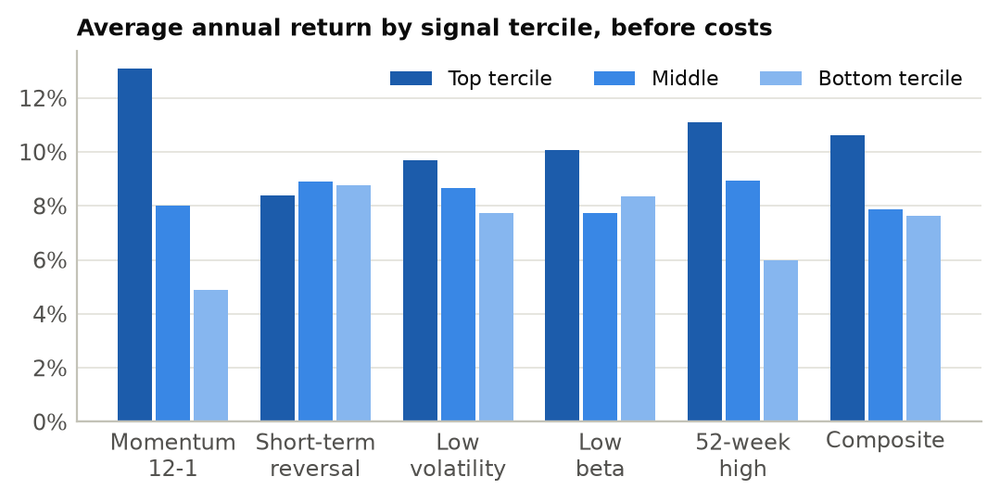
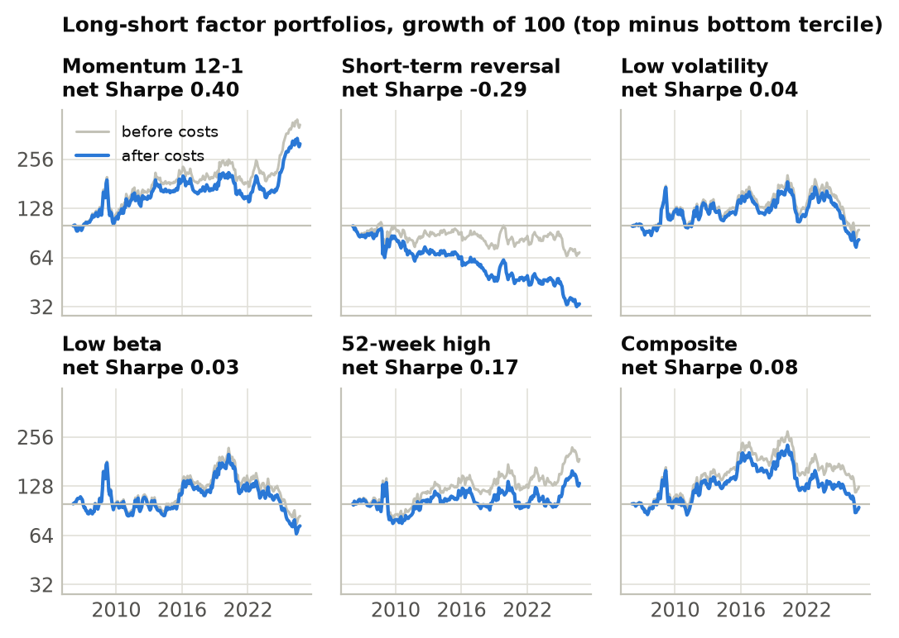
Long-short portfolios after costs
| Signal | CAGR | Vol. | Sharpe | Max DD | Beta | Alpha | t | Turnover | Break-even |
|---|---|---|---|---|---|---|---|---|---|
| Momentum 12-1 | 5.8% | 17.9% | 0.40 | −46.3% | −0.40 | 10.2%*** | 2.82 | 5.3 | 81 |
| Short-term reversal | −5.2% | 14.4% | −0.29 | −67.9% | 0.12 | −5.2% | −1.61 | 16.3 | −2 |
| Low volatility | −0.9% | 18.4% | 0.04 | −60.2% | −0.61 | 5.4% | 1.64 | 2.1 | 33 |
| Low beta | −1.5% | 20.3% | 0.03 | −67.3% | −0.76 | 6.3%** | 2.02 | 2.1 | 28 |
| 52-week high | 1.4% | 17.9% | 0.17 | −43.7% | −0.53 | 7.0%** | 2.25 | 7.1 | 33 |
| Composite | −0.2% | 18.6% | 0.08 | −61.4% | −0.64 | 6.3%* | 1.95 | 5.8 | 25 |
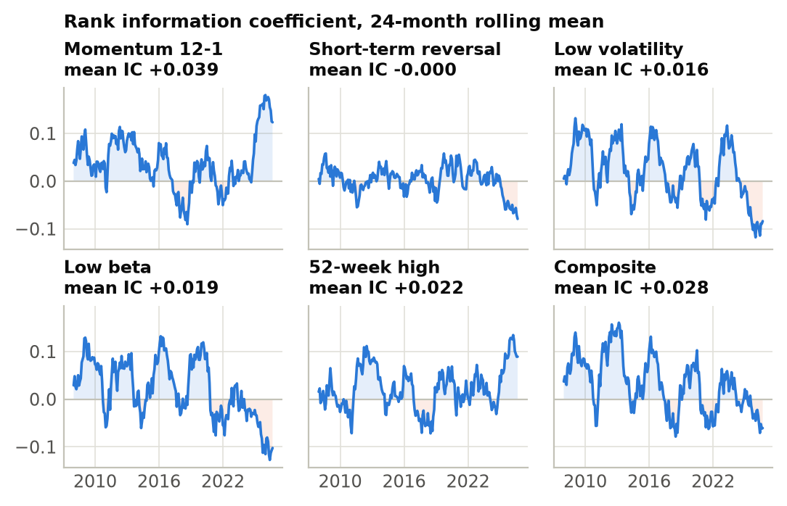
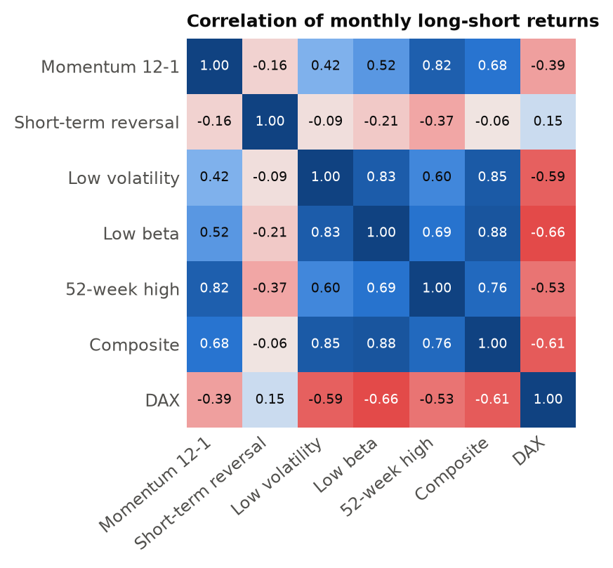
Long only, against the DAX
| Portfolio | CAGR | Vol. | Sharpe | Max DD | Beta | Alpha | t | TE | IR | Up | Down | Turnover |
|---|---|---|---|---|---|---|---|---|---|---|---|---|
| Momentum 12-1 | 12.0% | 16.3% | 0.71 | −34.4% | 0.79 | 5.5%*** | 3.23 | 9.1% | 0.43 | 94% | 71% | 2.7 |
| Short-term reversal | 4.2% | 20.4% | 0.25 | −60.4% | 1.03 | −2.7% | −1.32 | 9.2% | −0.27 | 96% | 110% | 8.3 |
| Low volatility | 8.7% | 13.2% | 0.61 | −32.9% | 0.65 | 3.2%** | 2.39 | 9.2% | 0.06 | 75% | 61% | 1.0 |
| Low beta | 9.4% | 12.7% | 0.67 | −26.5% | 0.56 | 4.3%*** | 2.91 | 11.1% | 0.09 | 68% | 49% | 1.0 |
| 52-week high | 9.5% | 14.1% | 0.63 | −39.7% | 0.69 | 3.7%** | 2.56 | 8.9% | 0.15 | 81% | 65% | 4.0 |
| Composite | 9.8% | 13.7% | 0.67 | −37.7% | 0.65 | 4.2%*** | 2.80 | 9.7% | 0.16 | 76% | 57% | 2.9 |
| Equal-weight PIT | 7.1% | 17.5% | 0.41 | −53.3% | 0.97 | −0.1% | −0.11 | 3.4% | −0.09 | 97% | 97% | 0.4 |
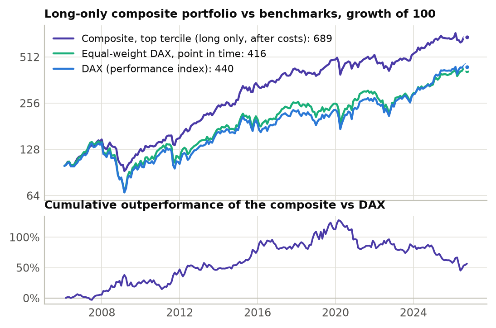
Robustness
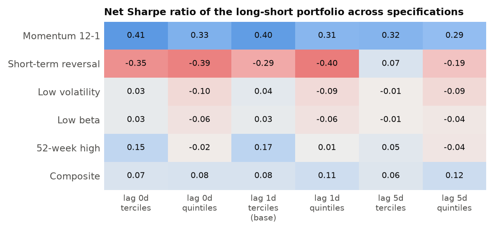
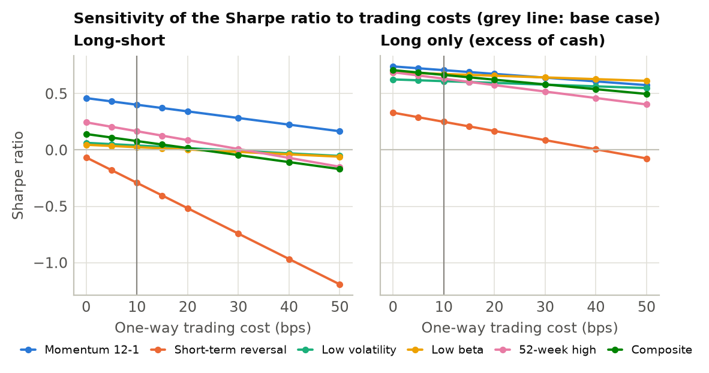
Subperiods (Sharpe / CAGR)
| Series | Crisis years 2006-2012 | Low-rate era 2013-2019 | 2020 to date |
|---|---|---|---|
| DAX | 0.19 / 4.2% | 0.62 / 8.2% | 0.55 / 10.0% |
| S&P 500 (EUR) | 0.06 / 2.1% | 1.41 / 17.8% | 0.88 / 15.1% |
| Equal-weight PIT | 0.25 / 5.3% | 0.66 / 8.6% | 0.42 / 7.6% |
| Momentum 12-1 (L/S) | 0.37 / 6.0% | 0.35 / 4.3% | 0.52 / 7.1% |
| Short-term reversal (L/S) | −0.20 / −5.3% | −0.13 / −2.1% | −0.59 / −8.1% |
| Low volatility (L/S) | 0.24 / 2.8% | 0.30 / 3.6% | −0.45 / −8.9% |
| Low beta (L/S) | 0.09 / −0.8% | 0.54 / 8.2% | −0.59 / −11.3% |
| 52-week high (L/S) | 0.14 / 0.6% | 0.17 / 1.4% | 0.22 / 2.2% |
| Composite (L/S) | 0.26 / 3.4% | 0.47 / 6.7% | −0.56 / −10.3% |
| Composite (long only) | 0.59 / 10.1% | 1.20 / 14.2% | 0.31 / 5.1% |
Live out-of-sample record since 2026-10-14
No out-of-sample data yet. The specification was frozen on 2026-10-14; this table fills in automatically with every update.
The market: DAX vs S&P 500
| & DAX | S&P 500 (EUR) | Equal-weight PIT | Equal-weight survivors | |
|---|---|---|---|---|
| CAGR | 7.4% | 11.5% | 7.1% | 11.0% |
| Volatility p.a. | 17.7% | 14.4% | 17.5% | 17.9% |
| Sharpe ratio | 0.43 | 0.74 | 0.41 | 0.61 |
| \quad standard error | 0.23 | 0.23 | 0.23 | 0.23 |
| Sortino ratio | 0.62 | 1.16 | 0.60 | 0.91 |
| Maximum drawdown | −52.4% | −46.9% | −53.3% | −55.5% |
| Longest drawdown (months) | 64 | 57 | 62 | 37 |
| Calmar ratio | 0.14 | 0.24 | 0.13 | 0.20 |
| Skewness (monthly) | −0.49 | −0.35 | −0.57 | −0.47 |
| Excess kurtosis (monthly) | 1.55 | 0.81 | 1.81 | 2.83 |
| VaR 95% (monthly) | 8.7% | 6.8% | 7.9% | 7.4% |
| Expected shortfall 95% | 11.9% | 9.0% | 11.9% | 11.8% |
| Positive months | 59.7% | 64.1% | 60.9% | 61.3% |
| Best month | 16.8% | 14.4% | 16.3% | 22.2% |
| Worst month | −19.2% | −12.6% | −18.9% | −20.9% |
| Beta to DAX | – | 0.56 | 0.97 | 0.98 |
| Correlation with DAX | – | 0.69 | 0.98 | 0.97 |
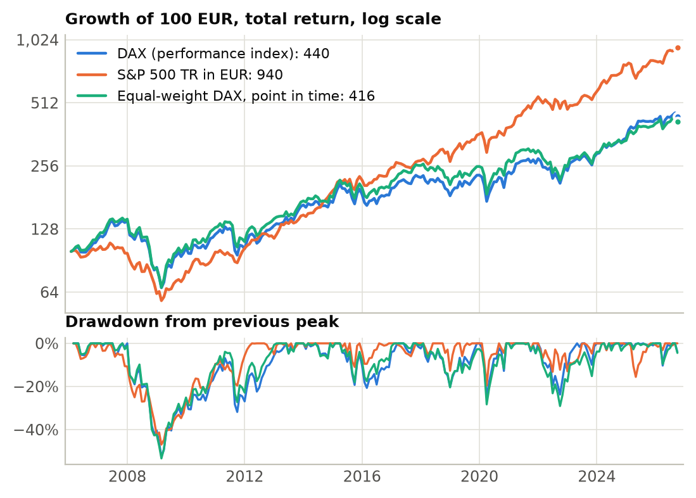
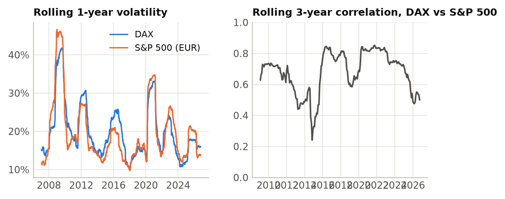
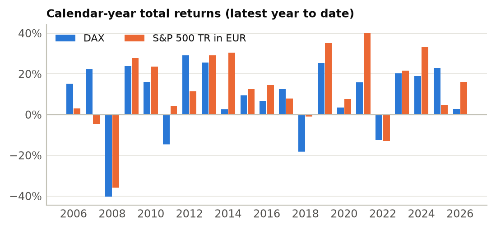
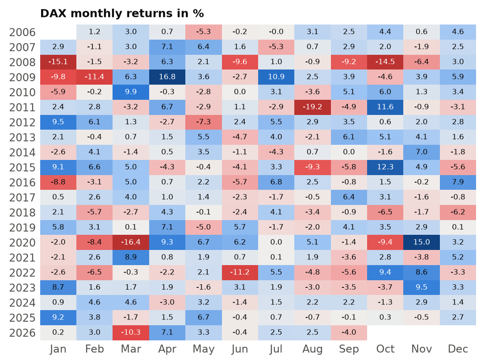
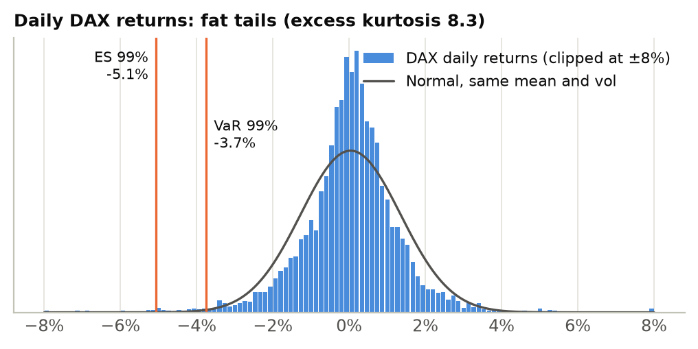
Calendar-year returns
| Year | DAX | S&P 500 (EUR) | Equal-weight | Composite (long) | Momentum (L/S) |
|---|---|---|---|---|---|
| 2006 | 15.2% | 2.9% | 18.8% | 18.2% | 0.7% |
| 2007 | 22.3% | −4.7% | 20.1% | 25.7% | 13.1% |
| 2008 | −40.4% | −35.8% | −41.6% | −32.0% | 30.9% |
| 2009 | 23.8% | 27.7% | 29.8% | 27.7% | −24.6% |
| 2010 | 16.1% | 23.6% | 20.4% | 11.0% | 26.3% |
| 2011 | −14.7% | 4.2% | −14.4% | 5.8% | 7.1% |
| 2012 | 29.1% | 11.5% | 28.6% | 28.6% | −1.8% |
| 2013 | 25.5% | 29.2% | 21.6% | 27.2% | 19.1% |
| 2014 | 2.7% | 30.5% | 3.9% | 8.6% | −8.1% |
| 2015 | 9.6% | 12.7% | 11.3% | 24.4% | 15.2% |
| 2016 | 6.9% | 14.6% | 7.2% | 9.0% | −11.7% |
| 2017 | 12.5% | 7.9% | 19.0% | 15.8% | −0.2% |
| 2018 | −18.3% | −1.0% | −19.0% | −8.7% | 8.1% |
| 2019 | 25.5% | 35.2% | 22.3% | 27.8% | 11.5% |
| 2020 | 3.5% | 7.7% | 7.5% | −4.3% | −22.0% |
| 2021 | 15.8% | 40.1% | 11.0% | 12.0% | −2.6% |
| 2022 | −12.3% | −13.0% | −16.2% | −13.1% | 17.8% |
| 2023 | 20.3% | 21.6% | 16.8% | 17.0% | −11.2% |
| 2024 | 18.8% | 33.2% | 13.9% | 18.1% | 33.8% |
| 2025 | 23.0% | 4.8% | 20.5% | 6.3% | 47.0% |
| 2026 | 2.9% | 16.2% | 2.0% | 2.0% | 2.0% |
Data and universe
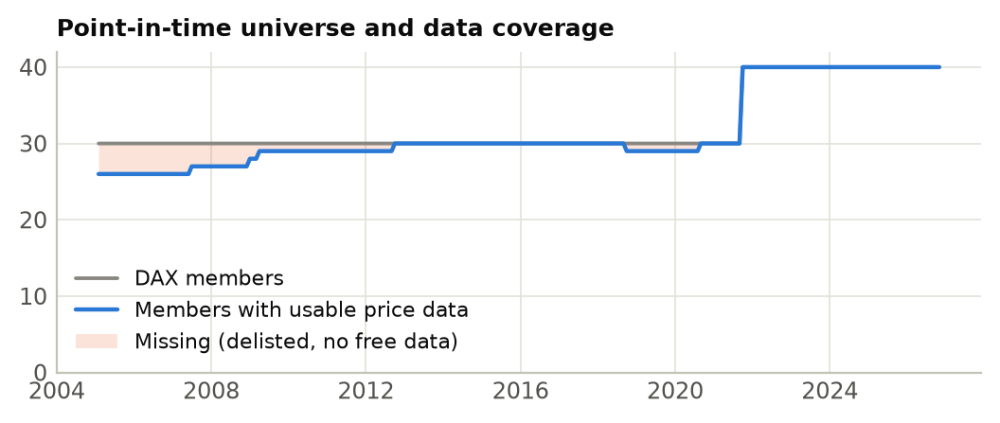
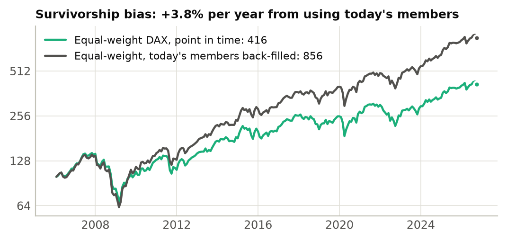
Members without free price data
| Company | In DAX from | Until |
|---|---|---|
| Altana | before 2005 | 2007-06-18 |
| Deutsche Postbank | 2006-09-18 | 2009-03-23 |
| Hypo Real Estate | before 2005 | 2008-12-22 |
| HypoVereinsbank | before 2005 | 2005-12-19 |
| MAN | before 2005 | 2012-09-24 |
| Schering | before 2005 | 2006-09-18 |
| Wirecard | 2018-09-24 | 2020-08-24 |
Data-quality corrections
| Date | Stock | Fix | Raw | Clean | Reason |
|---|---|---|---|---|---|
| 2005-01-31 | Bayer | spinoff | −2.2% | 1.3% | Spin-off of Lanxess (1 LXS per 10 BAYN) |
| 2007-06-11 | Deutsche Börse | split | −49.4% | 1.2% | 2-for-1 share split not reflected in the Yahoo series |
| 2008-10-10 | Deutsche Wohnen | bad tick | −20.1% | 0.0% | jump reversed next day |
| 2008-10-13 | Deutsche Wohnen | bad tick | 30.7% | 0.0% | jump reversed next day |
| 2013-07-08 | Siemens | spinoff | 4.1% | 2.1% | Spin-off of Osram (1 OSR per 10 SIE) |
| 2016-09-12 | E.ON | spinoff | −6.0% | −1.3% | Spin-off of Uniper (1 UN01 per 10 EOAN) |
| 2020-09-28 | Siemens | spinoff | 9.2% | 3.2% | Spin-off of Siemens Energy (1 ENR per 2 SIE) |
| 2021-09-16 | Continental | spinoff | −6.2% | 0.2% | Spin-off of Vitesco (1 VTSC per 5 CON) |
| 2021-12-10 | Mercedes-Benz Group | spinoff | 3.6% | −0.1% | Spin-off of Daimler Truck (1 DTG per 2 DAI) |
Every constituent
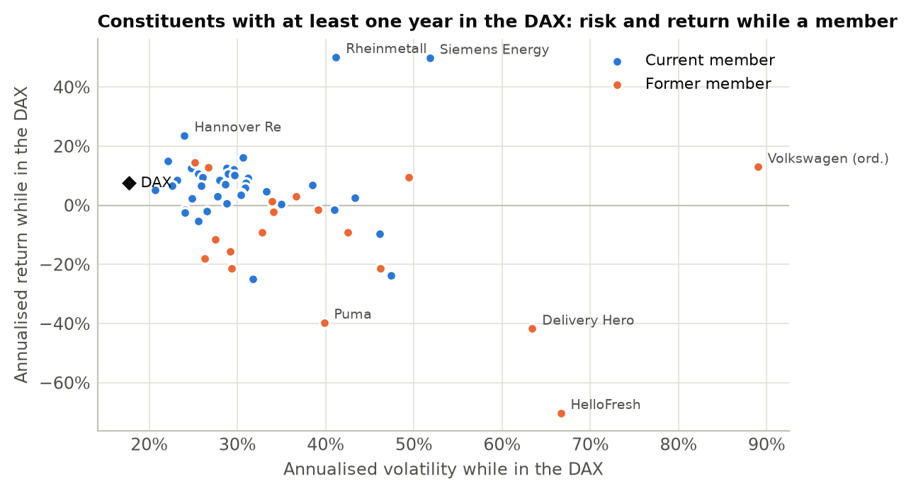
Statistics cover only the days a stock was in the index. † = no longer a member.
| Company | Sector | Years | Return | Vol. | Sharpe | Beta | Max DD | Worst day |
|---|---|---|---|---|---|---|---|---|
| Rheinmetall | Industrials | 3.6 | 50.2% | 41.2% | 1.12 | 1.02 | −53.0% | −18.7% |
| Siemens Energy | Industrials | 5.1 | 49.8% | 51.8% | 1.02 | 1.48 | −71.9% | −37.3% |
| Hannover Re | Financials | 5.1 | 23.6% | 24.0% | 0.91 | 0.65 | −17.5% | −7.7% |
| Daimler Truck | Industrials | 4.6 | 16.2% | 30.6% | 0.56 | 1.14 | −34.6% | −8.7% |
| GEA Group | Industrials | 1.1 | 14.9% | 22.1% | 0.64 | 0.68 | −16.7% | −5.0% |
| Linde† | Materials | 17.2 | 14.4% | 25.1% | 0.63 | 0.44 | −38.2% | −9.5% |
| Volkswagen (ord.)† | Consumer | 3.9 | 13.0% | 89.0% | 0.40 | 0.45 | −85.7% | −22.7% |
| Deutsche Wohnen† | Real Estate | 1.4 | 12.7% | 26.7% | 0.60 | 0.33 | −17.5% | −8.2% |
| Munich Re | Financials | 20.8 | 12.6% | 24.8% | 0.56 | 0.84 | −48.4% | −17.7% |
| Airbus | Industrials | 5.1 | 12.5% | 28.8% | 0.48 | 1.22 | −27.7% | −11.6% |
| Deutsche Börse | Financials | 20.8 | 12.0% | 29.5% | 0.49 | 0.84 | −76.9% | −12.1% |
| Allianz | Financials | 20.8 | 10.6% | 28.9% | 0.45 | 1.10 | −72.7% | −15.3% |
| Fresenius | Health Care | 17.7 | 10.6% | 25.6% | 0.49 | 0.68 | −72.3% | −17.7% |
| Siemens | Industrials | 20.8 | 10.2% | 29.7% | 0.43 | 1.15 | −67.3% | −17.1% |
| Salzgitter† | Materials | 1.5 | 9.5% | 49.4% | 0.41 | 1.50 | −39.9% | −16.1% |
| SAP | Technology | 20.8 | 9.5% | 26.0% | 0.43 | 0.81 | −53.0% | −21.9% |
| Heidelberg Materials | Materials | 16.4 | 9.3% | 31.2% | 0.42 | 1.18 | −66.6% | −14.2% |
| DHL Group | Industrials | 20.8 | 8.6% | 28.0% | 0.39 | 0.94 | −72.1% | −17.3% |
| Deutsche Telekom | Telecom | 20.8 | 8.5% | 23.2% | 0.42 | 0.69 | −40.6% | −13.0% |
| Adidas | Consumer | 20.8 | 7.7% | 31.0% | 0.35 | 0.90 | −71.5% | −15.4% |
| BASF | Materials | 20.8 | 7.2% | 28.6% | 0.34 | 1.08 | −60.3% | −13.6% |
| MTU Aero Engines | Industrials | 7.1 | 6.8% | 38.5% | 0.33 | 1.22 | −62.9% | −15.6% |
| Merck KGaA | Health Care | 19.5 | 6.6% | 25.9% | 0.34 | 0.63 | −52.6% | −14.7% |
| Henkel | Consumer | 20.8 | 6.6% | 22.6% | 0.34 | 0.62 | −56.3% | −11.3% |
| BMW | Consumer | 20.8 | 5.9% | 30.9% | 0.30 | 1.11 | −65.4% | −13.2% |
| Beiersdorf | Consumer | 17.1 | 5.2% | 20.7% | 0.31 | 0.49 | −53.3% | −20.1% |
| Mercedes-Benz Group | Consumer | 20.8 | 5.2% | 33.5% | 0.28 | 1.27 | −76.5% | −18.9% |
| Volkswagen (pref.) | Consumer | 16.9 | 4.7% | 33.3% | 0.28 | 1.23 | −63.0% | −19.8% |
| Bayer | Health Care | 20.8 | 4.1% | 30.4% | 0.24 | 0.93 | −82.3% | −18.0% |
| RWE | Utilities | 20.8 | 3.4% | 30.3% | 0.22 | 0.81 | −85.4% | −17.3% |
| E.ON | Utilities | 20.8 | 3.1% | 27.7% | 0.20 | 0.82 | −77.3% | −11.5% |
| Metro (old)† | Consumer | 6.7 | 2.9% | 36.7% | 0.20 | 0.80 | −71.5% | −13.9% |
| Infineon | Technology | 20.3 | 2.6% | 43.3% | 0.25 | 1.26 | −97.1% | −39.6% |
| Fresenius Medical Care | Health Care | 19.1 | 2.3% | 24.9% | 0.18 | 0.49 | −69.1% | −16.5% |
| Lufthansa† | Industrials | 14.5 | 1.4% | 33.9% | 0.18 | 0.97 | −75.2% | −14.2% |
| Vonovia | Real Estate | 11.1 | 0.5% | 28.8% | 0.13 | 0.65 | −65.8% | −12.1% |
| Continental | Consumer | 17.0 | 0.4% | 35.0% | 0.15 | 1.12 | −76.7% | −17.5% |
| thyssenkrupp† | Materials | 13.7 | −1.4% | 39.1% | 0.13 | 1.31 | −74.7% | −12.5% |
| Qiagen | Health Care | 5.1 | −1.6% | 24.1% | −0.04 | 0.42 | −43.4% | −10.8% |
| Deutsche Bank | Financials | 20.8 | −1.6% | 41.0% | 0.13 | 1.43 | −92.7% | −18.4% |
| Brenntag | Materials | 5.1 | −2.1% | 26.5% | −0.03 | 0.82 | −44.7% | −9.6% |
| Covestro† | Materials | 6.8 | −2.1% | 34.1% | 0.08 | 1.04 | −69.1% | −14.6% |
| Symrise | Materials | 5.1 | −2.4% | 24.0% | −0.07 | 0.47 | −47.0% | −9.1% |
| Siemens Healthineers | Health Care | 5.1 | −5.4% | 25.6% | −0.18 | 0.78 | −45.4% | −8.6% |
| K+S† | Materials | 7.5 | −9.2% | 42.5% | −0.03 | 0.99 | −70.1% | −24.7% |
| TUI† | Consumer | 2.7 | −9.3% | 32.8% | −0.25 | 1.09 | −50.5% | −8.5% |
| Commerzbank | Financials | 16.4 | −9.7% | 46.2% | −0.02 | 1.37 | −98.1% | −24.0% |
| Lanxess† | Materials | 3.0 | −11.5% | 27.5% | −0.31 | 0.90 | −49.3% | −7.0% |
| Porsche SE† | Financials | 4.8 | −15.6% | 29.2% | −0.51 | 1.05 | −62.1% | −10.9% |
| ProSiebenSat.1 Media† | Telecom | 2.0 | −17.9% | 26.3% | −0.60 | 0.93 | −40.7% | −14.5% |
| Porsche AG† | Consumer | 2.8 | −21.4% | 29.3% | −0.78 | 0.91 | −63.9% | −7.2% |
| Sartorius† | Health Care | 4.1 | −21.5% | 46.2% | −0.34 | 1.15 | −70.7% | −18.5% |
| Zalando | Consumer | 5.1 | −23.6% | 47.4% | −0.38 | 1.37 | −82.0% | −13.4% |
| Scout24 | Technology | 1.1 | −24.9% | 31.8% | −0.81 | 0.48 | −40.7% | −6.1% |
| Puma† | Consumer | 1.3 | −39.7% | 39.8% | −1.07 | 1.28 | −61.3% | −9.0% |
| Delivery Hero† | Consumer | 1.8 | −41.7% | 63.4% | −0.52 | 1.23 | −82.5% | −30.4% |
| Hochtief | Industrials | 0.3 | −58.7% | 33.8% | −2.51 | 1.26 | −28.4% | −9.4% |
| HelloFresh† | Consumer | 1.0 | −70.2% | 66.6% | −1.48 | 1.41 | −75.6% | −14.0% |